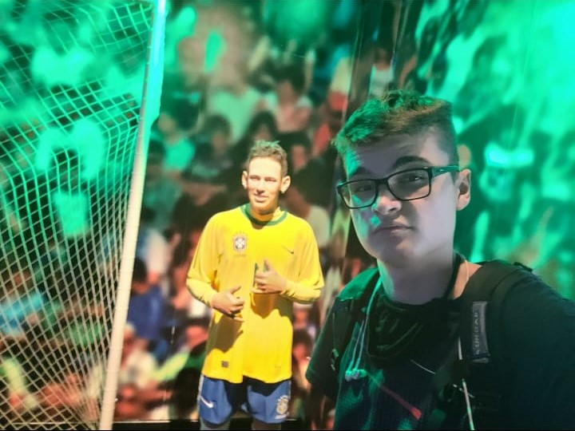

Quem sou eu?
Meu nome é Davi, tenho 19 anos e atualmente estou estudando desenvolvimento de software Multiplataforma na Fatec de Itapira, fazendo um breve resumo, meu esporte favorito é futebol e sou santista, tenho 3 animais de estimação 2 cachorras e 1 gata, moro em Mogi Mirim e atualmente só estou estudando.
